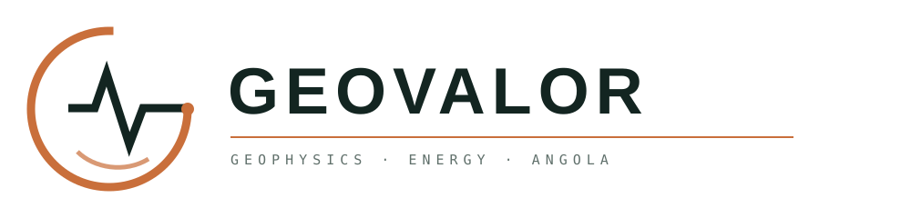
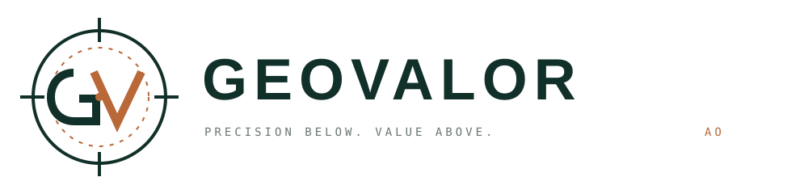

OPÇÃO 01
Topografia
Curvas de nível e “V” central. Orgânica, territorial e premium. ORIGINAL PRESERVADA
Geovalor Angola · Identidade visual
Curvas de nível e “V” central. Orgânica, territorial e premium. ORIGINAL PRESERVADA

Onda sísmica integrada num “G”. Comunica geofísica e leitura do subsolo de forma direta.
Estrutura hexagonal, camadas geológicas e um “V” forte. A direção mais industrial e versátil.

Monograma GV com mira de levantamento. Técnica, institucional e adequada a equipamentos de campo.